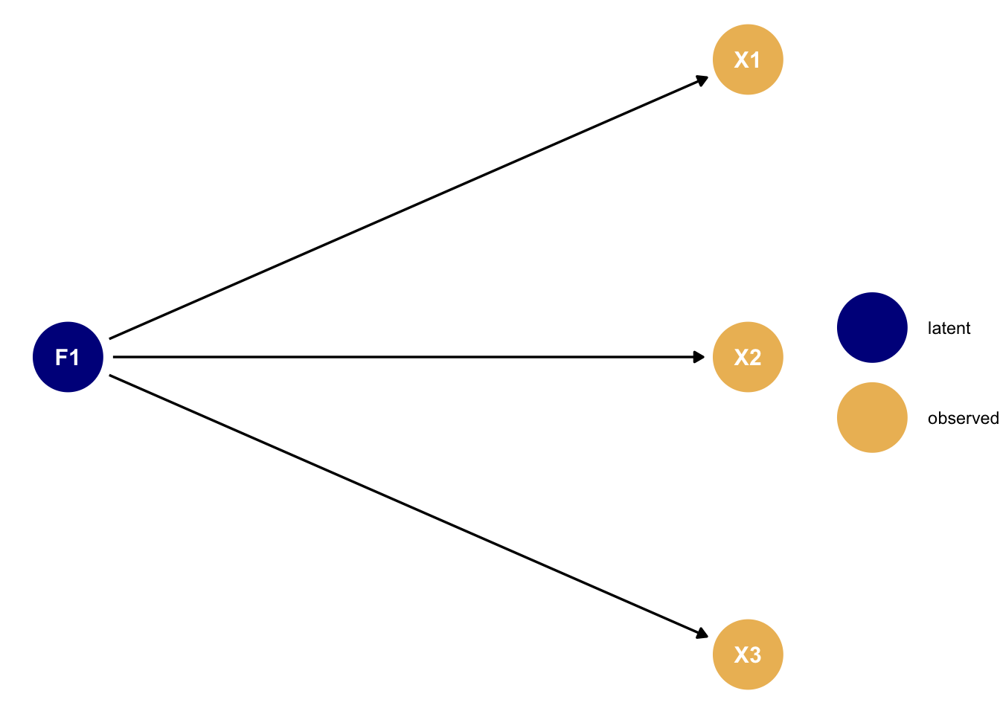

Code
library(tidyverse)
library(ggdag)library(tidyverse)
library(ggdag)The Whole Game of Confirmatory Factor Analysis (CFA) is that I’m trying to convince you my observed variables are confounded by some unmeasured variables. Usually I’m trying to show that the observed ariables are confounded in a very particular way, where a few small groups of variables are confounded only by one unmeasured variable per group.
So here’s the archetypal DAG of a CFA, where the Xs are observed variables, and F1 is an unmeasured variable I am trying to convince you exists. We can call this The Primordial CFA DAG:
# Set DAG coordinates
dag_coords <- list(
x = c(
F1 = 1,
X1 = 2,
X2 = 2,
X3 = 2
),
y = c(
F1 = 1.5,
X1 = 1.8,
X2 = 1.5,
X3 = 1.2
)
)
# Set DAG relationships and aesthetics
measurement_confounding_dag <- ggdag::dagify(
X1 ~ F1,
X2 ~ F1,
X3 ~ F1,
coords = dag_coords
) %>%
tidy_dagitty() %>%
mutate(
` ` = case_when(
grepl("^F", name) ~ "latent",
grepl("^X", name) ~ "observed"
))
# Plot the DAG
measurement_confounding_dag %>%
ggplot(aes(x = x, y = y, xend = xend, yend = yend)) +
geom_dag_point(aes(colour = ` `)) +
scale_colour_manual(values = c("dark blue", "#edbc64")) +
geom_dag_edges() +
geom_dag_text() +
theme(legend.title = element_blank()) +
theme_void()
CFA is just a way of trying to see whether the patterns of variance and covariance in your data are consistent with the above DAG, or a similar one.
The classic way of testing whether your data are consistent with a DAG is to condition on some of the variables, perhaps by including it as a predictor in a linear regression model, and see whether the patterns of correlation change in the ways the DAG expects based on the rules of d-separation. For the above DAG, this would mean controlling for F1 and seeing whether the correlations between X1, X2, and X3 decrease as a result. But in CFA we always assume the confounder is unmeasured, so we can’t directly control for it. Instead, we can only try to argue for our DAG in a more hand-wavy sort of way: we expect confounded variables to be correlated with each other, and uncounfounded variables to not be correlated with each other. This is why we focus on the empirical correlation matrix as the basis for our model: if a few of my variables are very correlated with each other then that is consistent with them being confounded by the same unobserved variable. But it is not proof! You can never prove a DAG, after all.
So interpreting a CFA model is all about checking to see whether the correlations between the variables are consistent with what we would expect to see under the DAG where each group of variables is confounded by a single unmeasured variable. In the next few chapters we’ll look at some examples of how people have liked to make the case for their unmeasured-confounder DAG.